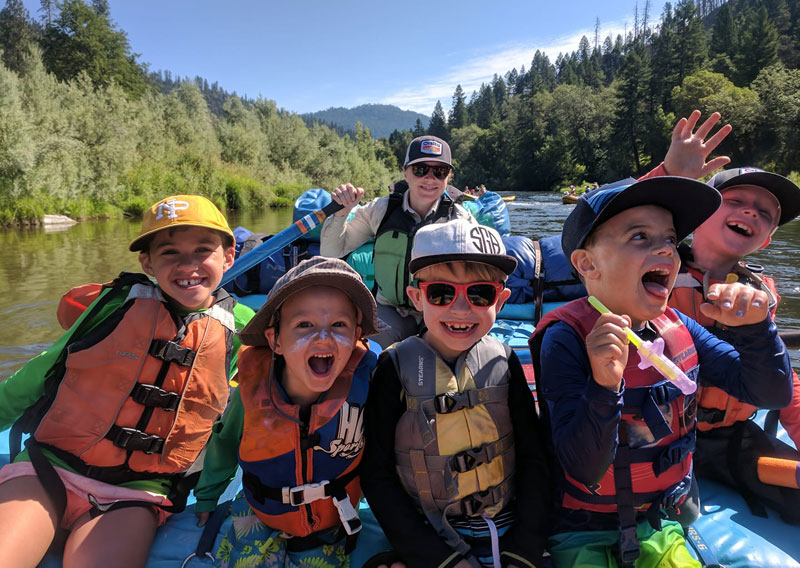
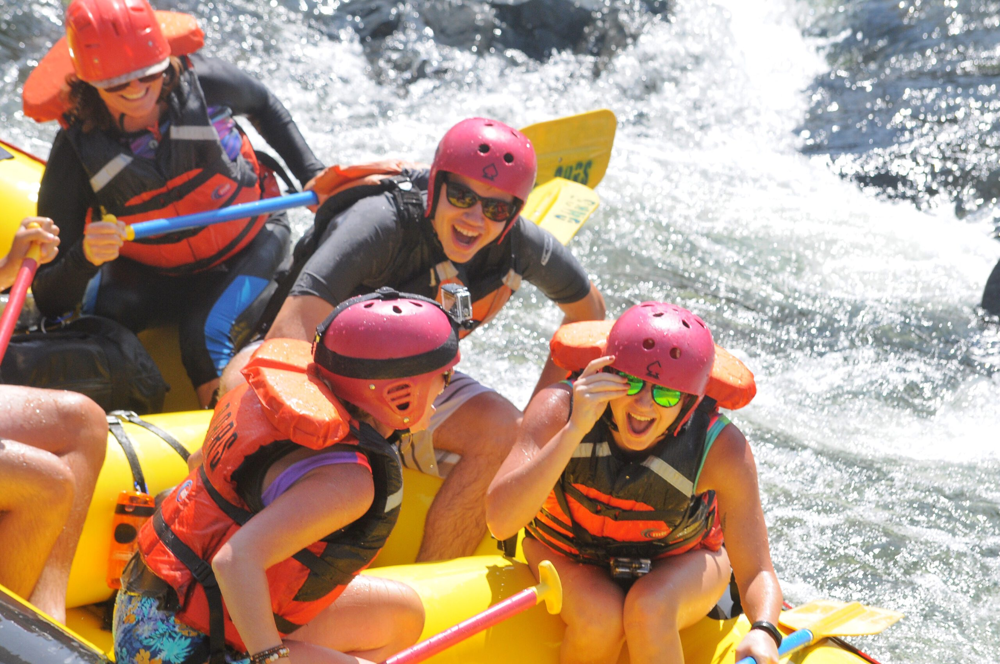

Our Ultimate Goal at Jay's Rafting?
As an organized team at Jay's Rafting, we are committed daily to ensure an unforgettable
experience for anyone who wants to step foot in the world of white water rafting. Between
beginners and the most advanced riders, we want to provide a chance for everyone to experience
a fun time in adrenaline-flowing river waters.
WE WANT YOU TO HAVE A GREAT TIME DONE RIGHT!
How was Jay's Rafting founded?
In the rugged mountains of Colorado, three decades ago, a daring adventurer named Lance Amerjan III conceived the dream of sharing
the exhilarating thrill of white water rafting with the world. Thus, "Jan's Rafting" was born. Starting with just a handful of rafts,
Lance and his team set out to conquer the untamed rivers, navigating the challenging rapids, discovering hidden gems along the way. Despite facing
financial hurdles and environmental concerns, Lance's unwavering commitment propelled the company forward, earning Jan's Rafting a reputation for
providing both heart-pounding excitement and a deep respect for nature.
Over the years, Jan's Rafting evolved into a thriving enterprise. The small team expanded, introducing new rafting routes
and pioneering eco-friendly practices to preserve the pristine beauty of the rivers they loved. Their 30th anniversary became
a milestone celebration, marked by a grand expedition down the most challenging river in the region. Past and present clients,
loyal employees, and original members reunited for an unforgettable journey, weaving together memories of laughter, camaraderie,
and, of course, the rush of the rapids. As they navigated the twists and turns of the river, Lance reflected on the incredible legacy
that had sprouted from a wild dream three decades prior.
Today, Jan's Rafting stands as a testament to Lance's vision, welcoming new generations of adventure-seekers into its close-knit family. The
spirit of exploration and camaraderie lives on in every splash of the river, echoing the legacy of an adventure that began over 30 years ago in
the heart of the Colorado mountains.
(Thanks ChatGPT for helping with the detailed story xd)